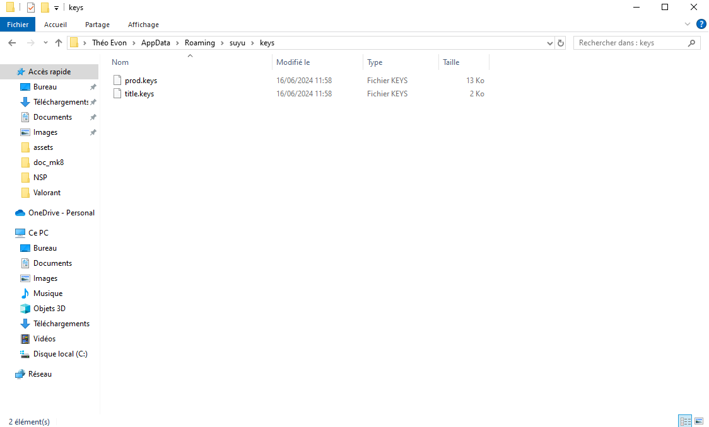
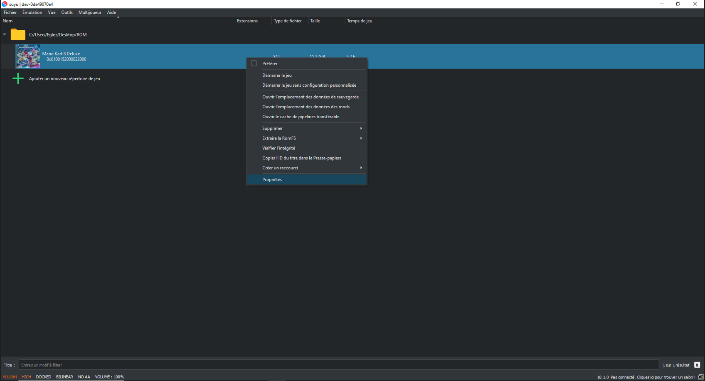
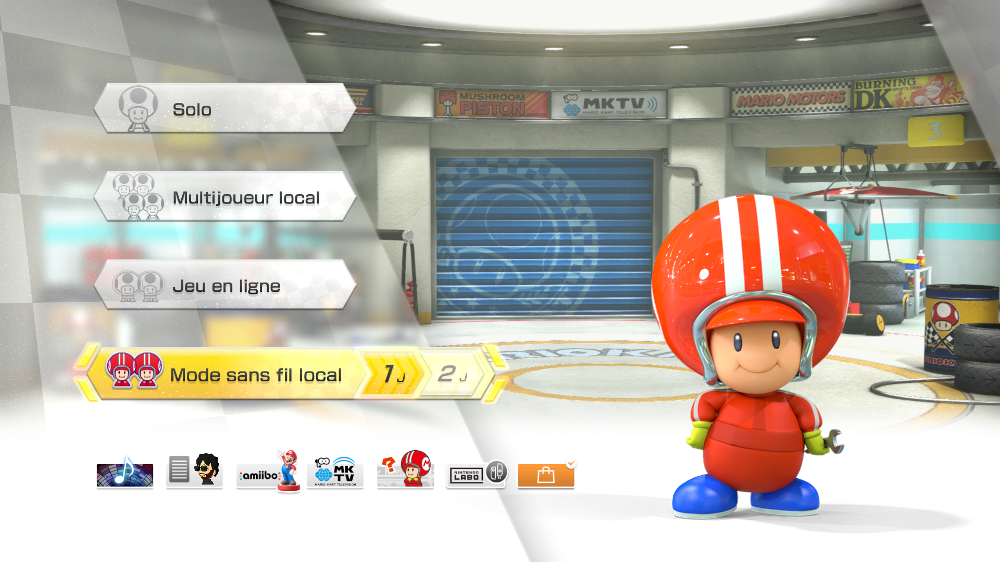
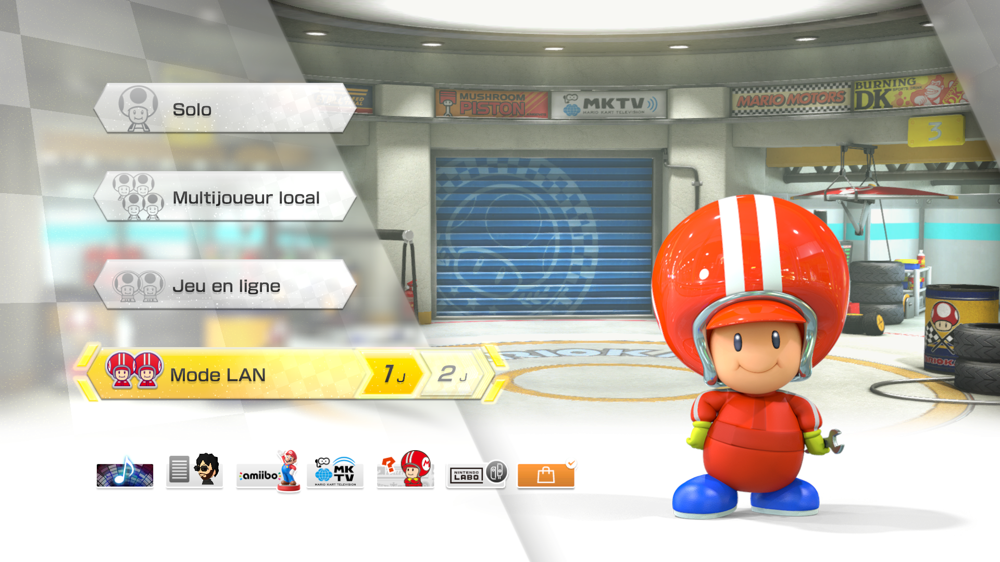
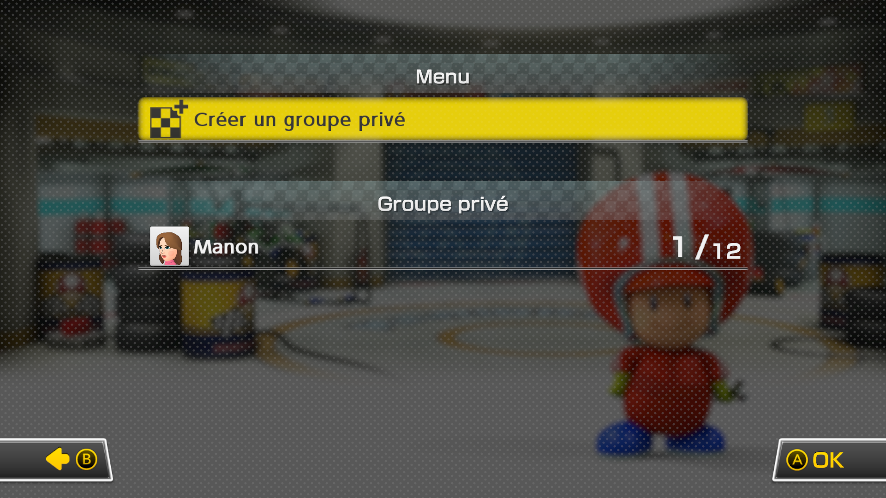

Tutoriel Windows
Vous êtes bien sur le tutoriel pour Windows. Commençons !
Aller à l'étape 1
Dans cette étape, vous allez apprendre à télécharger l'émulateur pour Windows.
Cliquez sur le boutton ci dessous pour accédez à la page d'installation de l'émulateur
Installer SuyuUne fois arrivez sur la page vous devriez trouver cette section :
Cliquez sur : Suyu-Windows_x86_64.tar.xz
Une fois que vous avez installé Suyu il ne vous manquera plus qu'à extraire le fichier zip, et ensuite vous aurez un dossier comme ceci :
Vous l'ouvrez et ensuite vous descendez jusqu'à trouver ce fichier :
Je vous conseille de créer un raccourci pour que ce soit plus simple les prochaines fois !
Lancez l'application pour la première fois
Vous allez voir une erreur s'afficher sur votre Suyu et c'est normal cliquez sur ok ou yes, nous allons régler ça !
Dans cette étape nous allons en premier temps télécharger les clés de productions
Et par la suite les introduire dans l'émulateur
Cliquez sur le boutton ci dessous pour télécharger le dossier contenant les prod keys
Télécharger les clésUne fois téléchargé vous allez extraire le dossier et vous aurez ces 2 fichiers la :
Maintenant on ouvre Suyu de nouveau et on se rend dans l'onglet Fichier->Ouvrir le dossier de Suyu
Vous allez arriver ici :

Si ce n'est pas le cas le chemin du dossier est : C:\Users\*Utilisateur*\AppData\Roaming\suyu
Vous allez maintenant vous rendre dans le dossier "keys" et y mettre vos deux petits fichiers :
Vous devriez avoir un résultat comme celui ci-dessus !
Vous pouvez maintenant relancer l'émulateur, et nous allons passer à l'étape suivante !
Dans cette étape nous allons en premier temps télécharger le firmware
Et par la suite l'installer dans l'émulateur
Cliquez sur le boutton ci dessous pour télécharger le dossier contenant le firmware
Télécharger le firmwareUne fois téléchargé vous allez extraire le dossier afin d'avoir ce dossier la :
Maintenant on retourne sur Suyu et on se rend dans l'onglet Outils->Installer le firmware
Ensuite vous allez séléctionner votre dossier Firmware afin de pouvoir l'installer :
Vous aurez un cours temps de chargement le temps que le Firmware s'installe correctement
Félicitations, désormais votre Suyu est correctement configuré pour pouvoir y mettre des jeux
Dans cette étape nous allons télécharger le jeu et l'implenter dans Suyu
Le fichier contient le jeu dans sa dernière version, ainsi que tous les DLC additionnels
Cliquez sur le boutton ci dessous pour télécharger le jeu
Télécharger le jeuUne fois le jeu téléchargé vous allez le mettre sur votre bureau :
Vous allez ensuite le mettre dans un dossier, peu importe le nom, je vais l'appeler ROM pour l'exemple
Ce dossier servira à mettre vos jeux de switch à l'intérieur
Maintenant retournez sur Suyu
Par défaut vous aurez un affichage comme celui ci dessus
Vous allez double cliqué, et ensuite séléctionner votre dossier qui contient vos jeux
Félicitations, vous avez réussis !
Avant de commencez à pouvoir jouer, nous allons encore faire quelques configuration sur l'émulateur
Allez dans l'onglet Emulation->Configurer...
Ensuite vous allez vous rendre dans l'onglet Système

Changez si vous le souhaité la région et la langue, ce sera pour vos jeux
Vous allez ensuite vous rendre dans la partie Profils toujours dans l'onglet Système
Cliquez sur votre utilisateur et ensuite vous pouvez renommer le
Ce sera le nom qui sera affiché lors de nos parties multijoueur
Nous avons désormais terminé avec l'onglet Système
Rendez vous désormais dans l'onglet Contrôles afin de configurer votre manette
Faites vous plaisir ce sont vos contrôles !
Vous pouvez maintenant quitter la fenêtre
Vous pouvez si vous le voulez créer un Mii
Ce personnage vous représentera dans le lobby multijoueur de Solganeo
Rendez vous ici !
Faite vous plaisir :)
Nous allons maintenant passer à la dernière configuration
Pour ce faire faites un clic droit sur votre jeu dans Suyu
Et cliquer sur propriétés
Rendez vous dans l'onglet Adv. Graphiques
Et vous allez cocher la case "Use asynchronus shader builder (Hack)
Cette option va réduire les saccades en jeu et vous serez fluides
Nous allons maintenant passer à la dernière étape !
Rendez vous sur la page download de Zero Tier en cliquant sur le boutton ci dessous
Installer Zero TierProcédez à l'installation
Ensuite éxécuter le programme
Suivez le processus d'installation
Ensuite lancez l'application Zero Tier
Si vous ne voyez pas l'icon sur le bureau allez dans la barre de recherche
Créer un raccourci ensuite pour que ce soit plus simple
Vous pourrez voir que l'application a été lancé dans votre barre des tâches en bas ou en cliquand sur la flèche
Ensuite vous allez cliquer dessus et cliquer sur join new network
Vous allez arriver sur cette fenêtre
Entrez la clé suivante : d3ecf5726d27e0dd
Cliquez sur Join
Voila ce que vous devriez obtenir
Désormais vous n'avez plus qu'à attendre que Omar accepte votre connexion pour avoir le status en "OK"
Maintenant ! Rendez vous sur Suyu !
Allez dans Emulation->Configurer...
Allez dans Système->Réseau
Ensuite séléctionner le réseau ZeroTier One
Puis cliquez sur OK
Félicitations le multijoueur est maintenant configuré avec le serveur Solganeo
Nous allons maintenant passer au jeu
Lancez votre jeu !
Avant toute chose rendez vous dans le menu Statistiques

Puis appuyez sur la touche X ( triangle pour manette play ), ( j'en sais rien pour Xbox ), ( Play > XBOX )

Puis séléctionner votre Mii

Retournez maintenant à l'accueil
Entrez la combinaison de touche suivante : L + R + Joystick Gauche ( il faut bien appuyer dessus pas juste le tourner )
Voila vous avez accès au Mode LAN
Et voila je peux maintenant soit créer un groupe soit rejoindre des groupes déjà existants !!!
Félicitations c'est la fin de ce tuto